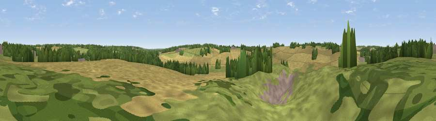

Viewpoint near Codicote
#44242 in England · top 73% of its area beats it · near CodicoteWhere it is
The exact computed spot (TL 21475 17325). Click the marker for map links.
The view, rendered

A 360° render of this exact spot computed from the terrain model, tree cover and land cover — summer colours, afternoon light, calibrated against photographs of famous viewpoints. Real trees, hedges and buildings will differ in detail.
The panorama
Grey silhouette: terrain skyline in each direction (720 bearings, Earth curvature and refraction included). Dashed green: skyline with trees (+15 m) and buildings (+8 m) as obstacles. Blue strip: how far the ground is visible on each bearing.
Where the view opens
Wedge length = distance to the farthest visible ground on that bearing (vegetation-aware). Rings at 10, 25 and 50 km.
What fills the view
47% cropland · 35% grassland · 13% woodland · 4% built-up
Angular shares of the visible panorama (visual magnitude), not map area. Landscape diversity 0.49 (0–1 Shannon).
Key numbers
More beautiful places nearby
The staircase of upgrades: each row has a higher view potential than everything closer. Driving times are estimates from straight-line distance, calibrated against real road routing — check an actual route before setting out.
| Place | Direction | Drive | Score |
|---|---|---|---|
| Viewpoint near Welwyn | ESE · 3 km | ~7 min | 28.8 |
| Burnham Green | E · 5 km | ~11 min | 31.7 |
| Viewpoint near Stanborough | SSE · 6 km | ~13 min | 38.6 |
| Viewpoint near Gosmore | NNW · 10 km | ~20 min | 38.8 |
| Viewpoint near Thundridge | E · 13 km | ~24 min | 40.8 |
| Viewpoint near Great Offley | NNW · 15 km | ~26 min | 54.4 |
| Warden Hill | NW · 15 km | ~27 min | 57.3 |
| Viewpoint near Hexton | NW · 15 km | ~27 min | 65.4 |
51.84132, -0.23815 · source: screening · position refined by local search. Computed location — check access rights before visiting.